Smart Gridfinity: bins that light up, on a base that knows where they are
Every bin carries its own lights and a small passive board with an ID. The base holds the bins with magnets, feeds them power, reads which bin stands on which cell, and switches their lights. One power bin brings in 12–24 V. This page shows the 3D design and how everything connects. The project is at design stage: nothing has been printed yet.
Four words used on this page
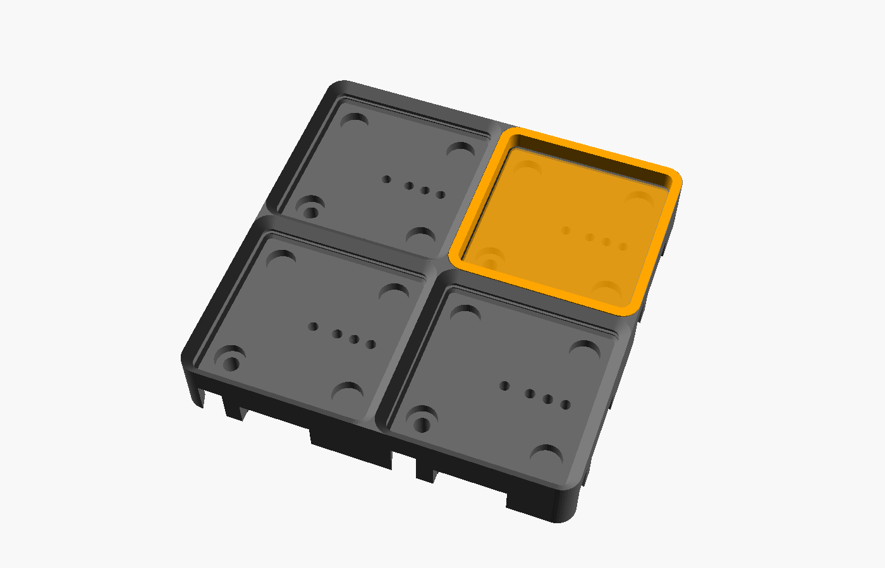
The whole grey piece is one tile. The orange square is one cell.
Tile: one printed piece of the base, with one electronics board. It can be any size from 2×2 to 4×4 cells, and tiles of different sizes join edge to edge.
Cell: one 42 mm socket in a tile. Each cell has four spring pins and nothing else.
Bin: one container. It covers one or more cells and has one small board with an ID chip.
Compartment: one walled space inside a bin, with its own light. The number of compartments does not depend on the number of cells.
The test set
Two 2×2 tiles joined edge to edge, a 2×1 bin with two compartments, two 1×1 bins and the power bin. The right-hand tile is a starter tile. This is the smallest set that tests power across a tile joint, tiles finding each other, a multi-cell bin, and both mounting orientations.
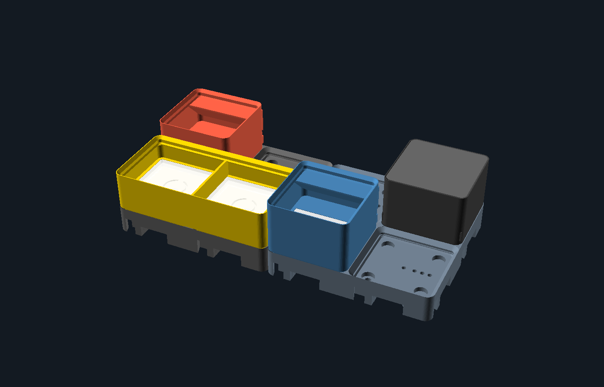
The pale floor of each compartment is clear filament and glows when that compartment is called. The dark closed bin is the power bin, on the power cell of the starter tile. The empty cell shows four pin holes in a row and four magnet pockets.
Who does what
Part
Contains
Job
Base tile
Magnets, one row board under each row of cells, carrying four spring pins per cell
Holds bins, passes 12–24 V on, makes 5 V for its own sockets, reads the ID under each cell, sends light commands to one cell at a time, reports which tiles touch it
Bin
Magnets, one bin board, one LED per compartment
Presents its ID. Passes power and light commands to its LEDs
Starter tile
A normal tile with one power cell
Takes the feed from the power bin and passes it to every tile
Power bin
Power board: DC input, fuse, hub radio
Brings 12–24 V into the starter tile, collects the tile reports, holds the map, talks to your software
The magnets carry no electricity. They only pull the bin board onto the pins.
Every part
All the pieces of the system, each shown on its own: the printed parts first, then the three circuit boards.
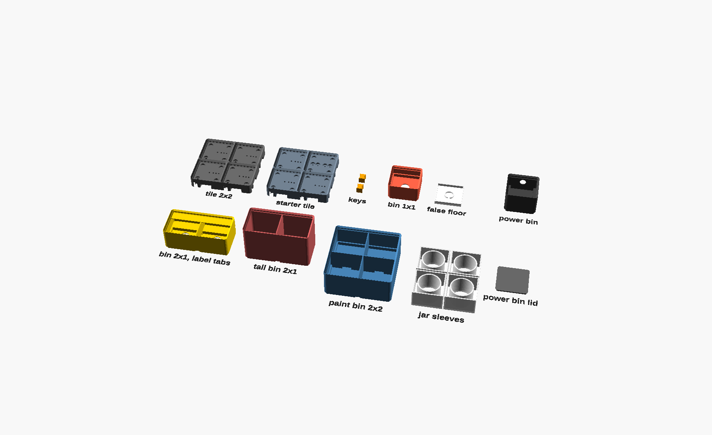
Printed parts of the base and the bins. The sleeves, the keys and the label tabs are optional.
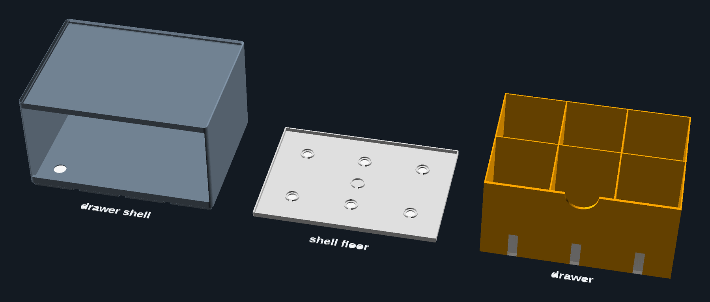
Printed parts of one drawer unit.
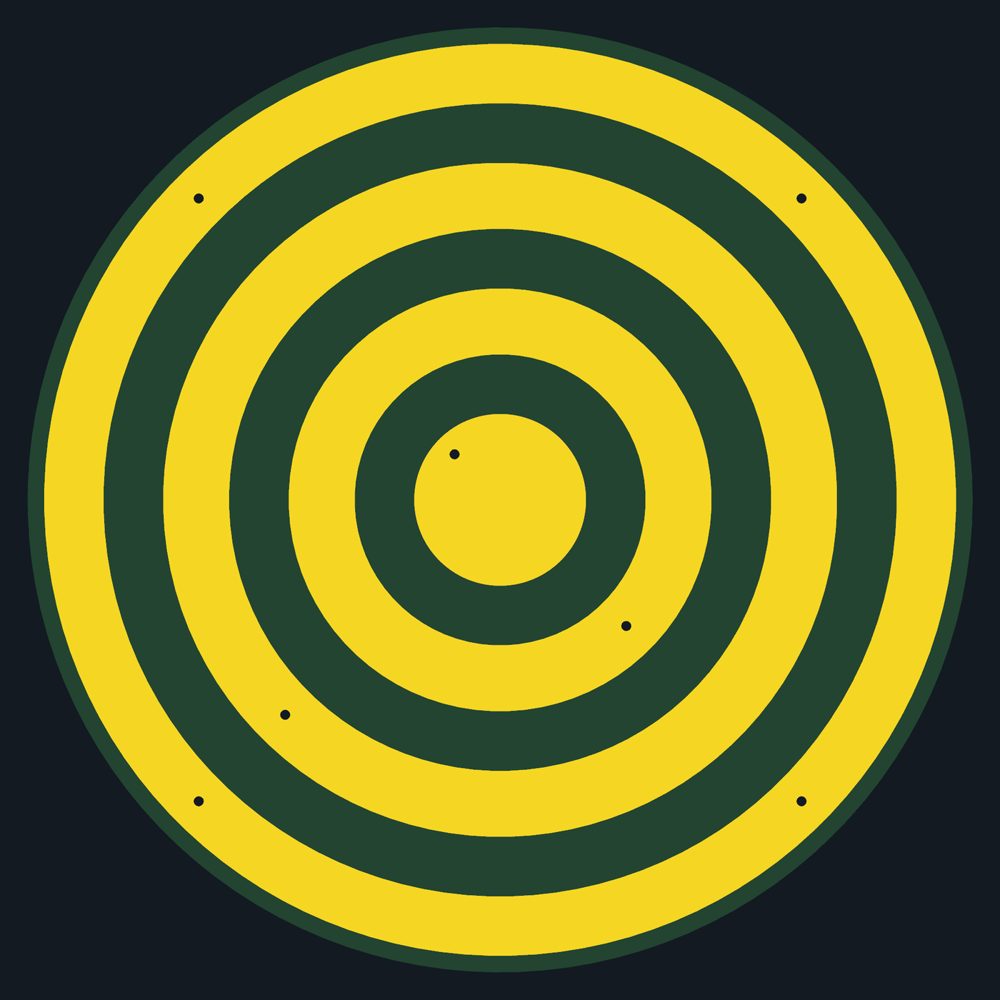
Bin board, underside. Centre pad and three rings: ID, light commands, 5 V, ground. These touch the four pins.
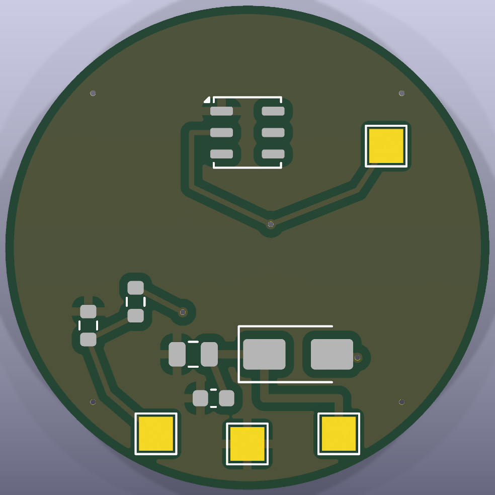
Bin board, upper side. The ID chip, five small parts, three solder pads for the LED chain at the bottom and one for the second foot's wire.
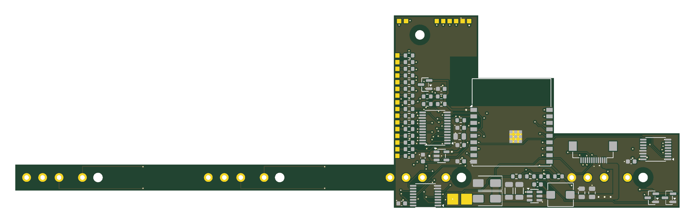
Row board of the first row, the side that faces down. Seen from below, so the wide end is on the right here. The wide end holds the radio module, the 5 V converter, the switch chips and the socket for the cable to the next row. The gold pads along its edge are for the leads from the edge connectors.
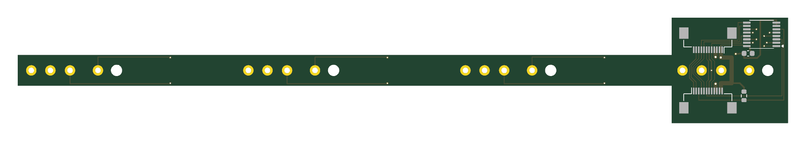
Row strip for every further row, the side that faces down. One switch chip between two cable sockets: one cable in from the row before, one out to the next row. The rest is pins and tracks, so the strip can be snapped shorter.
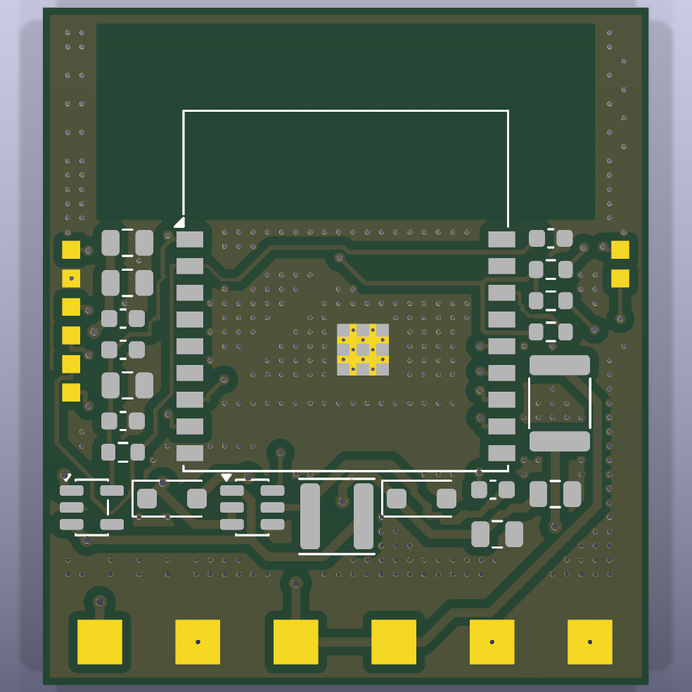
Power board. Hub radio module, and six large pads at the bottom: two for the DC input and four for the feed contacts. A draft.
Power and light commands reach a bin through its foot. Only the tiles and the power bin use radio.
Power: 12–24 V between tiles, 5 V from each tile up into its binsRadio: one per tile, and the power bin
Power in. A 12–24 V supply plugs into the power bin, which stands on the power cell of the starter tile.
Why 12–24 V. The same power needs less current at a higher voltage, so one feed reaches much further. Each tile steps it down to 5 V for its own sockets, so bins never see more than 5 V.
Tile to tile. The middle of every outer cell edge has an opening for a 3-pin magnetic connector. Push two tiles together and the connectors meet and snap.
Where the power bin goes. Only on the power cell, which is the back-right corner of the starter tile, with its socket facing outward.
Tiles of different sizes, joined
You can mix tile sizes freely and add tiles later.
Rule
Why
At most 4 cells each way, so 4×4 is the largest
A row board is four cells long, and the cable chain reaches four rows.
At least 2×2 cells per tile
The first row's board reaches under the second row and into the second column.
One starter tile per feed
It has the power cell. Any tile size can be printed as a starter tile.
All tiles the same way round
Plug halves of the connectors go on the right and back edges, socket halves on the left and front. The feed voltage then always meets the feed voltage, and "right of" means the same thing on every tile.
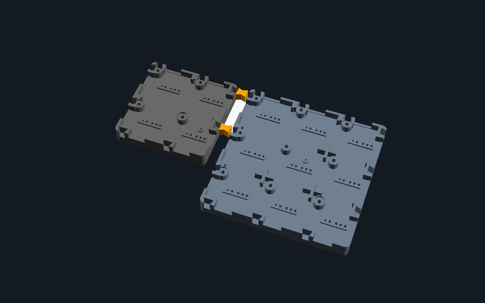
A 2×2 and a 3×3 tile from below, pulled apart. Every outer cell edge has an opening for an edge connector and a dovetail pocket beside it. The orange bow-tie keys are optional: they press into two facing pockets and lock the tiles. The long low bosses with a row of holes are where the row boards lie.
How tiles snap together: push two tiles together and the magnetic connectors snap. That makes the electrical joint and holds the tiles. No screws and no tools are needed.
Bow-tie keys are optional. For a permanent or wall-mounted grid they lock the joint and keep the 42 mm pitch exact. They go in from below, so they are not needed for a grid you rearrange.
Rubber feet are optional. Each tile has four pockets underneath for stick-on feet, so the grid does not slide on a table. They stand only 0.3 mm proud, so tiles with and without feet sit level.
Connectors needed: one pair for each pair of touching tiles is enough to find every tile and to feed it. More pairs only share the current.
Bins have no size limit beyond the printer bed, because a bin can sit across tiles.
Feed voltage
Row of 4×3 tiles fed at one end
Row fed in the middle
5 V
9 tiles, 1.5 m
17 tiles, 2.9 m
12 V
26 tiles, 4.4 m
49 tiles, 8.2 m
20 V
44 tiles, 7.4 m
85 tiles, 14.3 m
24 V
52 tiles, 8.7 m
103 tiles, 17.3 m
How far one feed reaches, with every radio on and one connector pair per joint. These figures are calculated, not measured. Before the wiring limits, one pair of feed pins limits a grid to about 40 tiles at 12 V and 80 at 24 V; the power cell has two pairs.
Contacts between bin and tile
Each socket has four spring pins in a row. The bin board has four rings round its centre, so a bin works whichever way round you drop it in.
The bin board is round, 28.6 mm across, and is glued into a recess in the foot with its rings 0.1 mm proud.
Checked: every pin stays on its own ring, and only that ring, with the foot up to 1.6 mm off-centre. The socket only allows 1.05 mm.
Wall mounting: the front-left magnet pocket of every cell has a hole under it. A pan-head screw goes there in place of the magnet, well away from the rings.
Section through one cell
Drawn to scale, cut through the middle of a 1×1 bin on a tile, front on the left. The snap latches are on the other two sides.
Flat: gravity and the magnets press the board onto the pins.
On a wall: the two snap latches click into a groove that runs round every socket wall, and the magnets assist. The pins have about 1 mm of spring travel.
Standard bins still fit these sockets. They sit and stick like on any magnet baseplate, but they are not identified and do not glow.
How position works
Which bin is on which cell. The tile steps through its cells and reads the ID chip of whatever stands on each one. The cell is known from the step, so nothing has to be measured.
Which tile is next to which. Each fitted edge connector has a neighbour pin. Over it, a tile tells the tile it touches its name and port number. The hub then knows which edge of one meets which edge of the other, and at what offset.
How big a bin is. A bin larger than one cell shows the same ID in two opposite corner cells. The rectangle between them is its footprint, also when it sits across two or four tiles.
An example: start with a 4×3 tile and push a 3×3 against its right edge. The connector that meets reports "tile B, left edge, port 1 touches tile A, right edge, port 1". The hub places tile B to the right, aligned with the first row, without any setup.
The tile
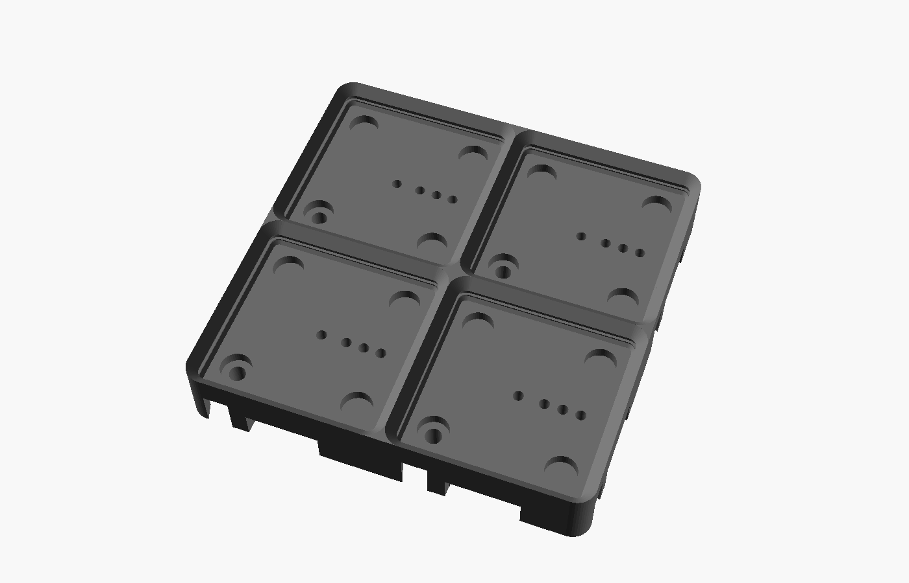
Top. Each cell has four magnet pockets and four pin holes in a row from the centre. The front-left pocket has a hole for a wall screw.
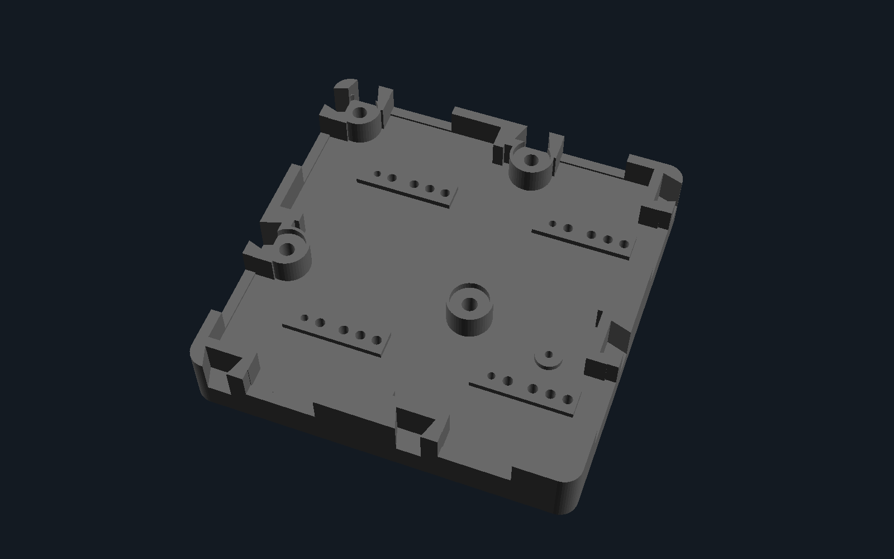
Back. The open cavity holds the row boards. Each lies against the long bosses, with its pins up through the four holes and one screw per cell. The notches in the outer wall are the edge ports and key pockets. The four larger round pads take the rubber feet.
Wiring inside one tile
One board lies under every row of cells and carries that row's spring pins, soldered on by the board maker. Shown for a tile three rows deep, seen from above.
ID pinLight-command pin5 V pinGround pinEdge connector leads
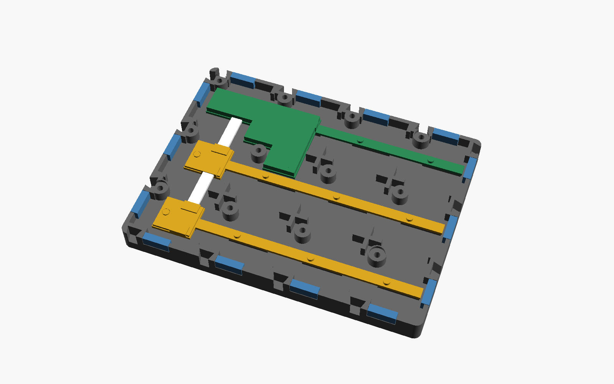
A 4×3 tile from below. Green: the first row's board. Gold: the strips of rows two and three. White: the flat cables. Blue: edge connectors. The boards are stand-in shapes with the room their parts need.
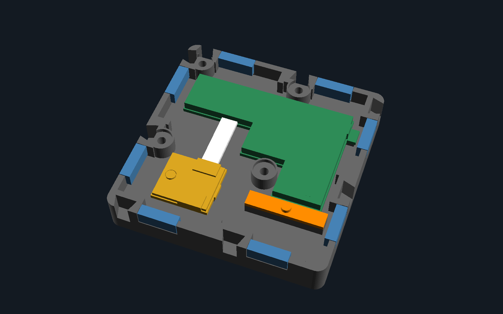
A 2×2 starter tile from below. The second row's strip is snapped to one cell, because the other cell is the power cell with its own feed board (orange).
First row: its board has the radio module and the converter that makes 5 V from the 12–24 V feed. It picks one row and one cell at a time.
Further rows: a narrow strip with one small switch chip. When its row is picked, the chip connects one of its four cells to the shared ID line and light-command line.
Between rows: one flat cable, 12 wires, 30 mm long, a stock part. Every cable is the same and carries 5 V, ground, the two shared lines, two cell-select lines and three row-select lines. Each strip passes the row-select lines on shifted by one, so every strip is identical and needs no setting.
One length fits all tiles: both boards are made four cells long, with snap lines after each cell group. A 2×2 tile uses the same boards as a 4×4, snapped shorter.
Fixing: push the pins up through their holes and drive one M2 screw per cell. The pins locate the board.
What you still solder, on the bench: the leads from the edge connectors and the feed board onto pads on the first row's board, before it goes into the tile.
The strips of the further rows are not passive: each carries one switch chip. Without it, every row would need its own 12-wire cable back to the first row, in three different lengths, with three more sockets on the first row's board.
The bin
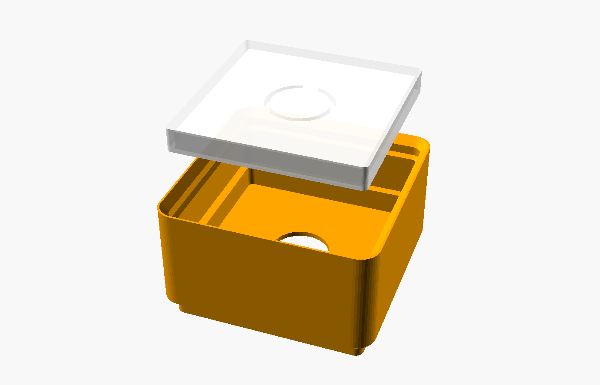
The clear false floor lifted. The finished LED chain is fed up through the hole in the middle. The ring under the false floor holds the LED.
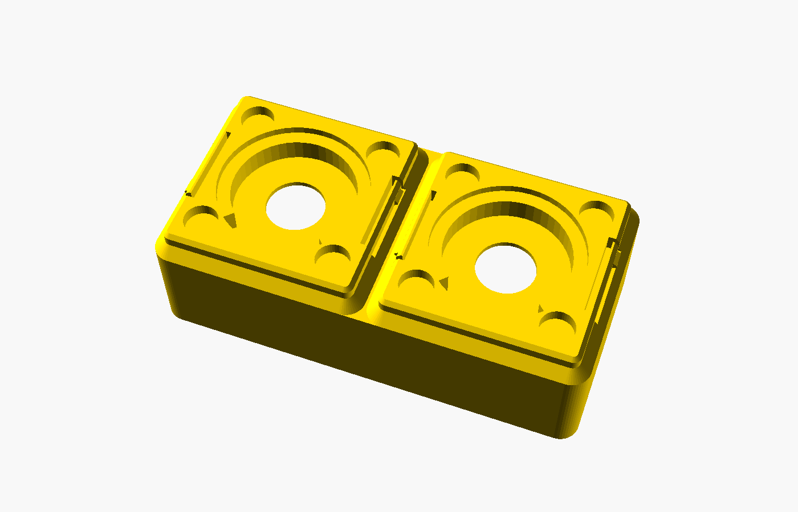
A 2×1 bin from below. Each foot has a round recess for a bin board, with a deeper pocket for the parts on the board, wider on one side for its solder pads. Both feet have four magnet pockets and two snap latches.
On the bin board
What it does
Four rings on the underside
ID, light commands, 5 V and ground from the socket pins
ID chip
Holds a unique number that the tile reads
Three solder pads
5 V, light commands and ground to the LED chain, one LED per compartment
Diode and small parts
Protect the board if a pin brushes the wrong ring while the bin is being seated
Fourth solder pad
Takes the wire from the second foot's centre pad, in bins larger than one cell
Each bin is a body in any colour plus one clear false floor per compartment. No two-colour print is needed. The false floor takes 4.6 mm of inside height, so a smart bin is at least 3 units high.
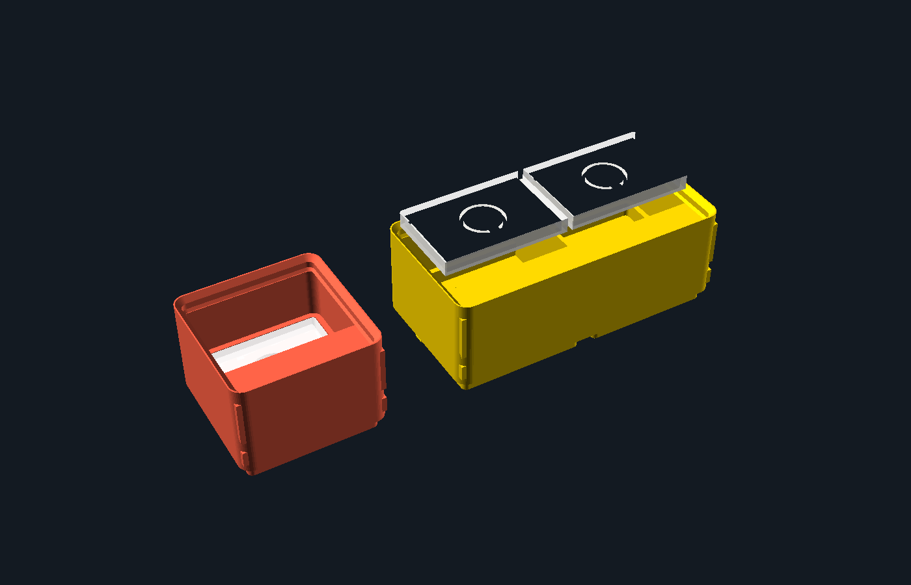
Bins with the optional label tab, seen from the back. The tab runs along the top of the back wall of every compartment, takes 9 mm label tape and doubles as a grip. The false floors are shorter, so they still drop straight in past the tab.
Label tabs are an option per bin and change nothing about how a bin fits the base. They need compartments at least 30 mm deep front to back. Jar and bottle bins are printed without them, because the tab would be in the way of the jar.
Compartments
A bin is a list of compartments. Each compartment has a clear false floor with its own LED underneath, all wired in a chain from the bin board. The contents table has one row per compartment, so asking for a colour lights only the floor of the compartment that holds it.
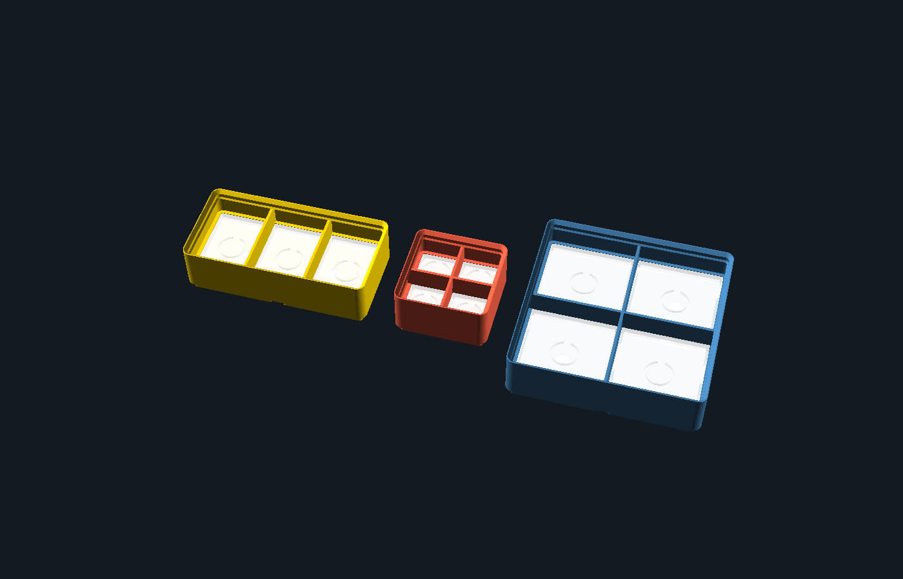
A 2×1 bin in three, a 1×1 bin in four, and a 2×2 bin in four. The dividers are part of the bin body and stop light spilling into the next compartment.
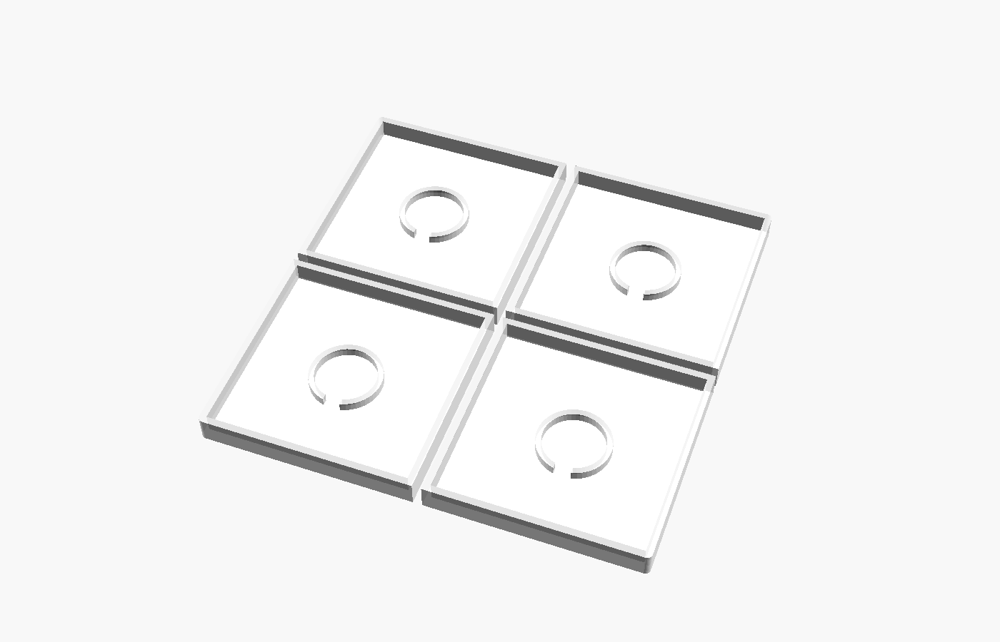
The four false floors of the 2×2 bin, from below. Each ring holds one LED board. The wires pass through a gap at the foot of each divider.
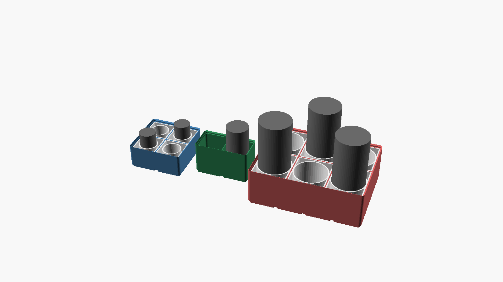
Left: the paint bin with a clear sleeve around each 20 ml jar. Middle: the cleaner bin for the two 60 ml bottles. Right: the bottle bin for the six 210 ml bottles.
Bin
Holds
Jar size
How the light shows
Paint bin, 2×2 cells, 5 units (35 mm)
4 paint jars, 20 ml
25.1 × 45 mm
Top face of the clear sleeve around each jar
Cleaner bin, 2×1 cells, 7 units (49 mm)
2 cleaner bottles, 60 ml
34.35 × 75 mm
The four corners of the floor, around the bottle
Pen holder, 2×1 cells, 10 units (70 mm)
Pens and brushes, two compartments
–
The floor of the compartment
Bottle bin, 4×3 cells, 8 units (56 mm)
6 bottles, 210 ml
48.2 × 120 mm
Top face of the clear sleeve around each bottle
Sleeves are optional, separate, hollow clear pieces with a hole for the jar. Print them as needed; the test set does not use them.
For the 48 paint jars: twelve paint bins, four jars each. The jars in one bin move together.
The cleaner bottles nearly fill their compartments, so the bin itself holds them and there is no room for a sleeve.
The 210 ml bottles are wider than one cell. One 4×3 bin holds all six, each in its own lit compartment. They stand 44 mm deep.
The starter tile and the power bin
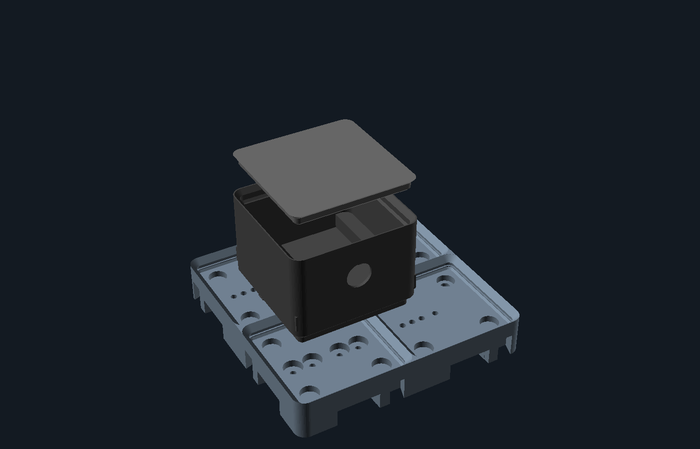
The power bin lifted off the starter tile, seen from the back. The cell with four larger holes in a row is the power cell. The round opening takes the DC socket.
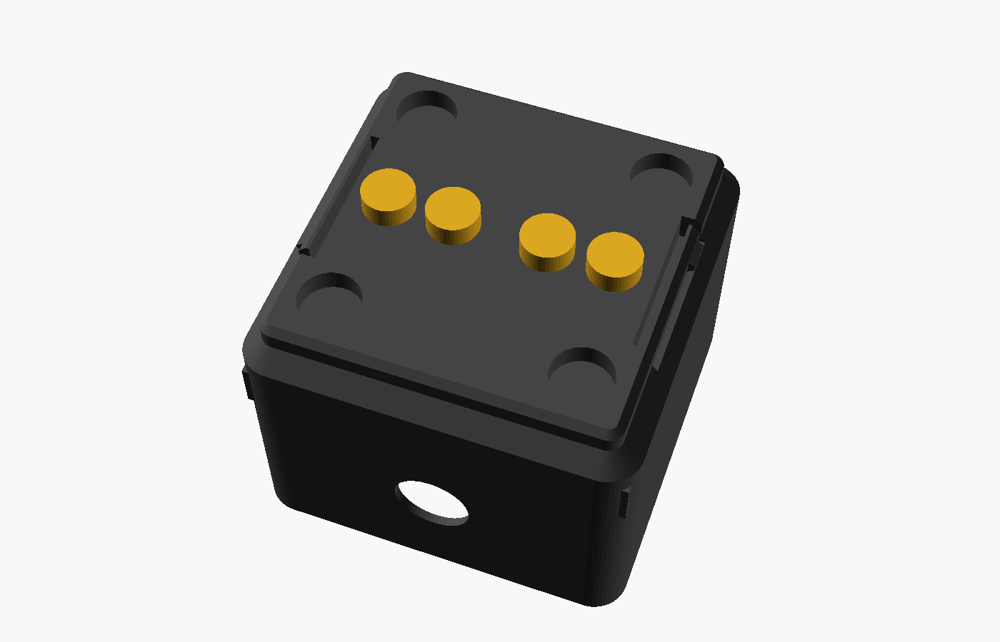
The power bin from below. Four brass screw heads stand 2.4 mm proud of the foot: the outer two are minus, the inner two plus.
Power cell: its four feed pins sit in wells 2.6 mm below the socket floor. A normal bin has a flat foot and cannot touch them.
Power bin: the screw heads reach down into the wells. Two pins carry each pole, because one spring pin carries about 2 A.
It cannot go on wrong. It seats in two positions, half a turn apart, and both give the right polarity. A quarter turn off, or on a normal cell, the screw heads land on the floor and it does not seat. All four cases were checked on the models.
Inside: the 34 × 38 mm power board lies flat on two ledges, above the nuts of the feed screws. It carries the fuse and the hub radio, which joins your Wi-Fi and talks to the tiles.
The screw-head contacts and the round DC socket are a proposal for two details the board work left open. Neither is tested.
The drawer unit
A drawer unit is a bin with an outer shell. The shell is the smart part: its bottom is the ordinary smart bin foot, with the same bin boards, magnets and latches. The drawer inside is a plain box with compartments and no electronics, so nothing connects or disconnects when it slides.
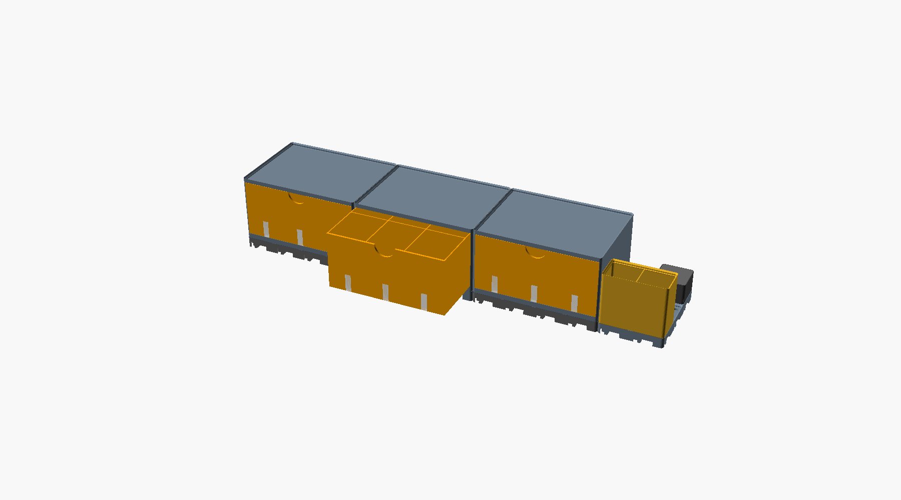
Three 4×3 drawer units on three 4×3 tiles, the middle one open. The small starter tile on the right carries the power bin and the pen holder. The pale strips on each front are clear and glow.
Measure
Value
Footprint
4×3 cells, 167.5 × 125.5 mm
Height
13 units = 91 mm, plus the stacking lip
Drawer inside
159 × 119 × 76 mm
Compartments
3 × 2 in the model, any count possible
Heights stay on the 7 mm raster. Whatever stacks on the unit sits exactly 91 mm above the socket floor it stands on. The top is closed and has a normal stacking lip, so standard bins sit on it unpowered.
Light with the drawer open: one LED per compartment sits in the shell floor under a hole, and the drawer bottom has a clear window over it.
Light with the drawer closed: each column has a clear strip in the front panel, lit by its front LED. For a back compartment the front strip of its column shows which drawer and column to open.
Position: the unit is read like any 4×3 bin, and the contents table has one row per drawer compartment.
Printing: the shell prints standing on its back wall, so the closed top needs no supports. The drawer and its clear parts are one two-colour print.
Drawer units have a plain top. Standard bins can stand on it unpowered; a second level of smart bins on top is not part of the design.
The whole collection on the grid
This is the scenario used to test the plan: 48 small jars, 8 bottles, a pen holder and the power bin, on eight tiles of three sizes. The tile sizes are chosen so that bins sit across the joints on purpose.
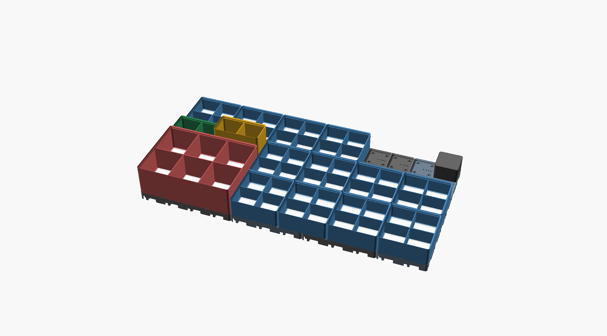
Red: the six 210 ml bottles. Blue: twelve paint bins, 48 jars. Green: the two cleaner bottles. Yellow: the pen holder. Dark: the power bin. Seven cells are spare.
Dashed: tile edges. 2 of 4×3, 4 of 3×3, 2 of 2×3Bins, one circle per compartmentLit when you ask for "yellow"
Result: using only what the tiles can report, the simulated hub placed all 8 tiles and all 16 bins correctly, including six bins that sit across a joint and one that sits on four tiles at once.
It still worked with a single connector pair per joint: 10 pairs instead of 30.
Power: about 5.4 W with every radio on. At a 12 V feed that is 0.45 A, and the furthest tile still gets 11.87 V.
Totals: 72 cells (504 × 252 mm), 8 tiles with 24 row boards, 15 bin boards with parts, 9 radios and 58 LEDs.
What was checked
These are calculations, simulations, tests on the 3D models, and the automatic rule checks of the board design program. The scripts are in the project's tests and pcb folders. None of this replaces a physical test, and no person has reviewed the boards.
Check
Result
Pins against rings, foot off-centre in any direction
Correct up to 1.6 mm off-centre; the socket allows 1.05 mm
Board schematics and layouts, automatic rule checks
All five boards: 0 errors, 0 warnings, 0 open connections. The first-row board is checked at 0.125 mm track spacing, the others at 0.15 mm
Signal simulation: ID line, light-command line, neighbour pin, 5 V and 24 V faults
All within limits, also with the row boards' switch chip at its worst-case resistance
Position discovery on the full layout and on the drawer row
All tiles, bins and drawer units placed correctly
Power, full collection, 12 V feed
5.4 W, 0.45 A; furthest tile 11.87 V. Busiest tile with every LED full white: 1.05 A of the 2 A its converter allows, and up to 0.96 A through a flat cable whose sockets allow 0.7 A, so the firmware must hold full white to 11 lights behind any one cable. Lit the way an item is shown, 16 lights draw 0.32 A
25 fit checks on the printed parts: foot in socket, bin across tiles, false floor past the lip, key in pockets, foot and power bin, drawer closed and open, power bin right and wrong way round
All pass
34 fit checks on what goes into the cavity: row boards, cables, feed board and edge connectors in eight tiles (2×2, 2×3, 3×3, 4×3, 4×4, and starter tiles 2×2, 2×3, 4×3), each against the tile, the edge connectors and each other
All clear. A strip moved 1 mm out of place collides, as it should
Cable socket, converter, radio module and coil against their makers' data sheets
Socket: contacts on the board side, 2.0 mm tall, 10.1 mm wide, 0.5 A per contact and 70 % of that when every contact carries current, latch on the cable side. Converter: pin order, 12–24 V input, 4.7 µH coil and capacitors as in the maker's table; it stands 40 V, and the surge diode clamps at 38.9 V. Radio module 3.2 ± 0.15 mm tall. The model and boards use these values
Boards against the models: ring sizes, pin, hole and socket positions, board outlines
Rings, outlines and positions match; the row boards to 0.05 mm
Part sizes from a web search
Short 2 mm spring contacts fit the tile height; the LED type chosen accepts 3.3 V data
One known interference remains by design: when two smart bins are stacked, the snap latches of the upper bin are held pressed in by the lip of the lower one.
Gridfinity parts mapped to the smart system
Standard base
Smart version
Plain open-frame baseplate
Not adaptable: it has no floor for pins. It stays useful as an unpowered plate, and standard bins fit both.
Magnet baseplate
The smart tile: four magnets per cell are built in.
Screw-down baseplate
The smart tile: one magnet pocket per cell takes a wall screw.
Clip-together or connectable baseplates
Bow-tie keys plus magnetic edge connectors.
Plates larger than the printer bed, split into pieces
Several tiles of up to 4×4 cells, each with its own board.
Weighted baseplate
Not adapted: the space under the floor holds the wiring.
Half-pitch (21 mm) baseplate
Not supported: the bin board needs a full cell.
Plates of one row or one column
Not possible: the smallest smart tile is 2×2.
Drawer plates with edge padding
Not modelled. Plain filler strips beside the tiles would do it.
Standard bin
Smart version
Plain bin, any footprint
Smart bin, any footprint up to the printer bed, 3 units or taller.
Divider bin
Smart bin with compartments: any count across and front to back, one light each.
Bin with magnet holes
Built in.
Stacking lip
Kept. Smart bins stack, and standard bins stack on them.
Item holders: jars, bottles, bits, batteries
A compartment bin plus a clear insert with holes. The jar sleeve is the first one.
Pen or tool cup
A tall smart bin: the pen holder is 2×1 cells and 10 units high.
Drawers
The drawer unit: a smart shell 13 units high with a passive drawer.
Lid
Modelled for the power bin; the same lid fits any 1×1 bin.
Label tab
An option on any smart bin, one tab per compartment.
Scoop front
Not modelled yet. It would be part of the false floor.
Bins lower than 3 units
Not possible: the false floor takes 4.6 mm.
Thin-wall "lite" or vase-mode bins
Not possible: the foot must be solid to hold the bin board.
Risers, spacers, unpowered accessories
Work unchanged on a smart tile.
How "find the yellow" works
You place a bin. The tile reads its ID in one or two cells, and the hub records "bin 0x3A is on tile A, cells 1 to 2".
You tell the software once what is in it: "bin 0x3A, compartment 1 holds cadmium yellow, compartment 2 holds lemon yellow".
You ask for cadmium yellow. The software looks up the bin and compartment, and the hub tells that tile to light compartment 1 of the bin on those cells.
You move the bin. The old cells read empty, the new cells read the ID, and the table follows without any input from you.
Soldering: keeping the iron away from printed parts
The design avoids soldering close to printed parts: no joint is made inside a tile. This is where every joint is made.
Joint
How many
Where the iron is
Status
Parts on the boards, spring pins included
All
At the board maker
No soldering by you
Row to row inside a tile
1 flat cable per further row
Nowhere: the cable plugs in
No soldering
LED chain of a bin: board pads to LEDs, LED to LED
3 + 6 per LED
On the bench
Fine: the finished chain feeds up through the bin
Wire from a bin's second foot to its bin board
2 per larger bin
One end on the bench, the other a few centimetres from the bin
Open
Power bin: board to feed screws and DC socket
6
On the bench; crimped ring terminals at the screws
Fine
Edge connectors: three leads each, to the connector and to the first row's board
6 per connector half
On the bench, before the board goes into the tile
Fine, but it is a loom: up to 16 connectors on a 4×4 tile
Feed board to the first row's board, starter tile only
4
On the bench
Fine
Materials list
Custom boards come assembled, with their electronic parts on them. Everything else is listed by specification, so any brand that meets it will do. The full list, with the reason for each spec, counting rules and sources, is in the project file docs/smart/parts.md. Nothing has been bought.
Part
Test set
Full collection
Drawer row
Row board, first row (custom, 4 layers, spring pins fitted)
2
8
4
Row strip (custom, 2 layers, spring pins fitted)
2
16
8
Feed board (custom, 30 × 6 mm, spring pins fitted)
1
1
1
Flat cable, 12 conductors, 0.5 mm pitch, 30 mm long, contacts on the same side
2
16
8
M2 × 6 self-tapping screws
10
80
46
Bin board with parts (custom, round 28.6 mm, gold-finished rings)
3
15
3
Bin board without parts, for the second foot
1
15
3
Power board (custom, 34 × 38 mm, 4 layers)
1
1
1
Single addressable RGB LED on a 10 mm round board, a type that accepts 3.3 V data (WS2812B-V5 or -V6)
4
58
18
Magnetic 3-pin connector pair, 2.54 mm pitch, 2 A per pin, rated 24 V or more, keyed by its magnets
1
10
3
Neodymium magnets, 6 × 2 mm, N35 or stronger
52
548
316
Stick-on rubber feet, 8 mm across, about 2 mm high
8
32
16
Brass M3 × 10 pan-head screws with nuts, for the power bin's contacts
4
4
4
Panel DC socket 5.5 × 2.1 mm, and a 12–24 V supply of 2 A or more
1
1
1
Custom boards: five designs, ordered assembled and pre-flashed, with the spring pins on them. No total cost is estimated, because the boards have not been quoted.
Spring pins are part of the board order: 2.0 mm barrel, 5.5 mm free height, solder tail, 2 A, stroke 1.2 mm or more. A row board carries 16.
Measure before printing: spring pin, edge connector, DC socket and screw-head sizes vary between sellers. Their openings in the model are still estimates.
Drawer row: three 4×3 drawer units on their own tiles with their own power bin. On the same grid as the collection it shares that grid's power bin.
Magnet polarity: every tile magnet goes in with the same pole up, and every bin magnet with the opposite pole down. A reversed magnet pushes the bin off its pins.
Magnets: 548 fills every cell and every foot. For flat use, 412 are enough, because feet without a bin board can go without.
What this design does not settle
The row boards are first drafts. The first-row board was routed by an automatic router, with tracks as close as 0.125 mm. Track by track, nobody has looked at it.
5 V copper is thin in places. The last 2 mm onto the cable socket is 0.8 mm wide, and the 5 V run along the first-row board is on inner layers, which board makers often make thinner. Fine on paper for 1 A; not measured.
Cable socket latch in the tile: the latch lifts on the cable side and needs a fingertip between two rows, 21.5 mm apart. Not tried by hand. Open, it stands 4.8 mm tall, past the tile's underside, so cables go in with the tile upside down.
Snapping a strip shorter cuts through 5 V and ground copper lying 0.7 mm apart. Untested; a board maker has not been asked whether they will score a 6 mm strip.
Small part heights (capacitors, diodes, chips other than the converter) are still from memory. The four tallest are from data sheets.
Part values not checked against datasheets: whether the ID chip tolerates 5 V on its data pin, the exact types of the switch chips, and the LED timing limits.
Nobody has reviewed the boards. Passing automatic rule checks does not make a board correct.
The power bin's contacts and DC socket are a proposal and are untested: brass screw heads on spring pins, carrying up to 4 A.
A bin across two tiles has one ID chip read by two tiles. They can talk over each other, so the firmware must retry. Untested.
The edge connector leads are still a hand-soldered loom on the first row's board: three leads per fitted connector.
Snapping the row boards. A 6 mm strip scored for snapping is untested: it may need cutting with side cutters instead.
Little room under the radio module. Its data sheet gives 3.2 mm ± 0.15 mm, so it ends 0.25 to 0.55 mm above the tile's underside. A pin that sits lower than drawn could make it touch the table.
The flat cable socket is a fine-pitch part with a small latch. Fitting the cable is a one-time job but needs care.
Contact reliability. Four pins per cell over 72 cells is 288 contacts that all have to work.
Latch strength on a wall. The snap latch engages by about 0.5 mm. Whether that holds a loaded paint holder is unknown until tested.
Drawer units on a table. Pulling a drawer drags the shell forward. The magnets and foot latches hold the unit to its tile, and rubber feet hold the tiles to the table. Whether that is enough is untested. The drawer also has no end stop yet.
Live pins in empty sockets. A 5 V pin is exposed in every empty cell. Each tile's converter limits the current.
Glow around a jar. The clear sleeve has to carry the light up from the floor: about 23 mm in the paint bin and 44 mm in the bottle bin. How bright the top face is remains untested.
Printing. The socket floor is a roof over the wiring space, so the tile needs supports. The smart parts need a 0.4 mm nozzle; some features are too fine for 0.6 mm.
Edge connector keying. Named-brand connectors repel when reversed. Cheap copies are unverified: check before wiring, because the connector carries up to 24 V.
Firmware for the tiles and the hub does not exist yet.
Stacked smart bins keep their latches pressed in, which may weaken them over time.
Wall holders. A normal bin on a wall faces outward. Paint bottles need a holder with the foot on its back, which is a separate part still to design.